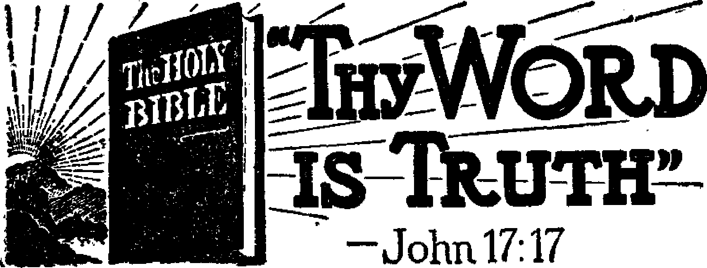
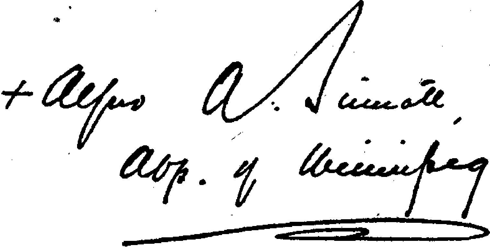

A Courageous Editor—Now Silent
By-passing Corporation Taxation
Gilead Matriculates Fourth Class
Tortoises — Turtles — Terrapins
Do You Wish Infantile Paralysis?
Kingdom Service Song Book—An Appreciation 13
14
16
18
20
22
22
23
24
From a Catholic’s Viewpoint
“Thy Word Is Truth”
Foundation of Government
The Song of Bernadette
The Use of the Bible
Sebring Postmaster Gets Preliminary Pay-off
Not to Stir Up Trouble
Postmaster Godwin on the Job
Kingdom Halls of Jehovah’s witnesses
Presenting “This Gospel of the Kingdom”
Three Effective Sentence Constructions
Straight Through to Heaven
Index to Volume XXV of Consolation
Published every other Wednesday by WATCHTOWER BIBLE AND TRACT SOCIETY, INC. ' 117 Adama St., Brooklyn 1, N. Y.t U. S. A.
OFFICERS
President Secretary Editor
$1 a $1.25 to
Clayton
N. H. Knorr Van Amburgh J. Woodworth
Five Cents a Copy year in the United States Canada and all other countries
NOTICE TO SUBSCRIBERS
Remittances: For your own safety, remit by postal or express money order. When coin or currency is lost in the ordinary mails, there is no redress. Remittances from countries other than those named below may be made to the Brooklyn office, but only by International postal money order.
Receipt of a new or renewal subscription will be acknowledged only when requested.. Notice of Expiration is sent with the journal one month before subscription expires. Please renew promptly to avoid loss of copies. Send change of address direct to us rather than to the post office. Your request should reach us at least two weeks before the date of issue with which it is to take effect. Send your old as well as the new address. Copies will not be forwarded by the post office to your new address unless extra postage is provided by you.
Published also in Greek, Portuguese, Spanish, and Ukrainian.
OFFICES FOR OTHER COUNTRIES
England 34 Craven Terrace, London, W. 2
Australia 7 Beresford Road, Strathfield, N. S. W.
South Africa 623 Boston House, Cape Town
Mexico Calzada de Melchor Ocampo 71, Mexico, D. F. Brazil Caixa Postal 1319, Rio de Janeiro
. Argentina Calle Honduras 5646-48, Buenos Aires
Entered as second-class matter at Brooklyn, N. Y.t under the Act of March 3* 1879.
In Brief 1
Jehovah’s witnesses in Switzerland
♦ An article published in the magazine Trost, a Swiss magazine, shows that J Jehovah’s witnesses are not carrying on" any subversive action, nor propaganda ■ endangering the security of the state. It' reveals an interesting story of a Catholic ■ newspaper’s publishing an article entitled “The System of Jehovah’s witnesses’’. In the article they asked four questions, to be answered officially. These questions were answered officially by Jehovah’s witnesses and the answers were published in the Trost magazine. Also, this article was published in pamphlet form. Action was then brought by the government against the Watch Tower printing. plant, and 6,400 pamphlets entitled “Catholics Ask Jehovah’s witnesses” were seized. These pamphlets, contained the answers to the four questions asked by the Catholic paper. The Watch Tower printing plant addressed a protest to the government, pointing out its illegal action and requesting an annulment of the order of confiscation. This pamphlet was an official answer to an official charge.
On April 16, 1942, a personal interview with the governor of Sursee was obtained by the representatives of the Watch Tower printing plant and certain laws of the land were called to the attention of the government. A copy of the complaint finally drawn up was sent to the attorney general of the Canton Lucerne district. On May 4, 1942, the Watch Tower printing plant received official notice that the criminal proceeding against it had been repealed and the pamphlets were to be returned and fees paid by the, state. The only “crime” that Jehovah’s witnesses appeared to have committed was that of answering a Catholic paper, and for so doing government action was brought against them. This is just another evidence of Catholic Action in operation against freedom of speech.—1944 Yearbook of Jehovah’s witnesses.
CONSOLATION
“And in His name shall the nations hope.”—Matthew 12:21, A.R.V.
* L h ■ ■ ■ ■— — ■ /.il. _ — — - ■ - —■-----■——— !-■--- —.-“t h -------~~--- ---'• -*i~ ii ■ .---mra . t_. ।---r ~~ _ ■ r i ■. |-i . jrt । - 1----r . . — ---j xr ----- — . .1— Tn i rrr ilriMt
------- -------- ---1---1----------------------................................... ■! --------.----1------- lb - * I hl-------------- ■ - _ .....- —■ ■» ----.----- I ----—------ — I ■ ■--------------■--- _ . iL _ _ . . ■ ■----_----- - . ■ ■-----■----- - • Volume XXV Brooklyn, N. Y-, Wednesday, September 27, 1944 Number 653
The Conscription of Wealth *
NOW, don’t get too much disturbed about that headline. Nobody ever took it seriously, not even the people that had the wealth. It was just a headline to help fill up the newspapers and give them something to get alarmed or excited about, so that they could sell their papers. Neither the Big Business crowd, nor the politicians, nor the newspapers, nor even the common people, imagined for a minute that the thing would be done. And it wasn’t. There was some talk about drafting labor. But ! drafting money! Well, no, it just isn’t . done. Haven’t you noticed the great ' distress in the papers about those who had enough income that they had to fill out an income tax report?
As a vote-getter, what could be more alluring than the politician’s ballot-box cry of a few years ago, “If there is ever another war, wealth will be drafted as well as men”? But after he is elected to Congress, there is but here and there a representative like John M. Coffee, of Tacoma, Wash., who would have the discernment and the courage to say, as he did:
I believe the menace of cartels is the greatest cloud that hangs on the horizon of the United Nations today. The Bank of International Settlements, which was set up about twelve years ago, the home office of which is at Basle in Switzerland, which is on the German border, is operating actively today. The principal depositor is the German Nazi government, which has 85,000,000 Swiss gold francs on deposit . . . I might point out that the head of that outfit is a man named Tom McKittrick, a partner of J. P. Morgan and
■J
Co., of New York city, who is right now the president of the Bank of International Settlements. Interestingly enough, the majority of the board of directors of the Bank of Inter-national Settlements are German Nazi officials, yet that bank is functioning right along and American money is being deposited in the bank. These cartels get along regardless of whether wars are being fought between their respective countries. They do not care who is fighting whom. They sit around the table together, Dr. Schacht, the great German financial expert, Montagu Norman, the great British financial expert, and Tom McKittrick, the great American financial expert.
A Courageous Editor—Now Silent
William Allen White, editor of the Emporia (Kans.) Gazette, has finished his work. Clear-minded, truthful, he had the courage to say, just before he passed away:
Here in Washington every industry is interested in saving its own self. It wants to come out of the war with a whole hide and with its organization unimpaired, legally or illegally. One is surprised to find men representing great commodity trusts or agreements or syndicates planted in the various war boards. It is silly to say “New Dealers” run this show. If s run largely by absentee owners of amalgamated industrial wealth, men who either directly or through their employers control small minority blocks, closely organized, that manipulate the physical plants of these trusts. ■
For the most part, these managerial magnates are decent, patriotic Americans. They have great talents. If you touch them in ■ I
nine relations out of ten, they are kindly,
couiieous Christian gentlemen. Bnt in the tenth relation, where it touches their own organization, they are stark mad, ruthless, unchecked by God or man, paranoiacs, in fact, as evil in their design as Hitler. They arc determined to come out of this war victors for their own stockholders, which is not surprising, It is understandable also for Hitler to desire to come out of this war at any cost victor for the German people.
But this attitude of the men who control the great commodity industries, and who propose to run them according to their own judgment and their own morals, does not make a pretty picture for the -welfare of the common man. These international combinations of industrial capital are fierce troglodyte animals with tremendous power and no social brains. They hover like an old silurian reptile about our decent, more or less Christian civilization, like great dragons in this modern day when dragons arc supposed to be dead.
The Desire to Boss the World
The desire to boss the world is widespread; there are several candidates for the job. The United States News says quite frankly that this war is to decide whether Germany and Japan are to run the world or whether, “as in the past, it is to be run by Great Britain and the United States.” That’s interesting, and important if true. Most Americans, busy in their own back yards, have never given much attention to running all the back yards everywhere else.
H. G. Wells, the British author, is out for a “prolonged armistice” in which there should be a string of special commissions to punish war criminals, restore devastated lands, exploit world resources, suppress profiteering and rearmament; else, as he says:
Big Business grabbing may destroy what is left of our world. Who are we to push aside Norwegians, Swedes, Indians, Czechs, Frenchmen, South Americans, Zulus, while the big business interests which weigh so much in our affairs make a fresh and final mess of the world ?
H. G. Wells and Win. Alien White talk much alike; don’t they?
It is natural for the common man to want better conditions. And it is of real interest to the Big Business crowd that such is the case. That is their market. Who will build the new plastic houses to which British workmen are looking forward? Somebody will own the'molds; somebody will own the sawdust and other things that go into the composition; somebody will put the dwellings together; and that somebody is in business today. Such a home was built in London by ten men in 52 hours, and the inventor claims that ten women could have done it in the same time. This model home contained one living-room, two bedrooms, a bathroom and a well-equipped kitchen, all suitably wired. The plumbing unit forms part of the wall between the kitchen and the bathroom and contains all the necessary pipes and tubes for hot and cold water required in a modern home.
The same London paper (Cavalcade) that tells about the foregoing (though not of the same date), tells how Africa is looking longingly for the better days that the whites, so far, in Kenya at least, have failed to bring. It quotes Sir Richard Acland as saying in the .House of Commons:
The natural resources of these territories have been exploited and developed by and for British shareholders, and there has been a top-dressing of administration on the surface. You can play about with that topdressing, push it a little farther below the surface and so on, but the basic fact is that these resources are owned by private individual white men. Dispossession of the natives is based on a land-enclosure system. In Kenya, for instance, 3,000,000 natives are, according to Du Bois, confined today to 50,000 square miles of the poorest land; the best land has been given to Europeans, often at a nominal price, in estates so large that they can only be cultivated by hired labor. Again and again forced labor has been legalized in Kenya; and it is legal today. Labor in the mines of South Africa .was long removed only a step from serfdom, and labor conditions there now allow a native wage of £3 a month.
Stock Market Not Sentimental
Though there are some hundreds of’ millions of people in the world that are sentimental about what happens in the world, the stock market is not in that class. When Mussolini fell off the balcony, stocks dropped from $1 to $5 a share. Those operating war industries feared that the war would be shortened and the days of big profits would draw to a close. And so what? Wonder if anybody would be mean enough to suggest that some, a fewT, who had been counting on huge profits, secretly hoped the end would not come until they had gathered in the big pile anticipated.
You have probably seen the list of salaries in the General Motors Company, of the seventeen executives that get over $100,000 a year each, ranging all the way from C. E. Wilson, with $276,433.04, down to poor Alfred J. Fisher, who was paid only $101,358.75. The total salaries of 28 men in the automotive industries came to $4,529,787.05 a year; but, lest you get to worrying about how they could get along on that, it should be explained that they got a lot more, because of ownership of stock, bonuses and other incidentals too numerous to mention. So they made ends meet. And, anyway, that salary list was away back in 1941, before Pearl Harbor, and there have been big things doing since then.
Some have suggested that the taxpayers have an interest in these matters of officials and supervisory officers of plants engaged in government work. Congressman Louis Ludlow, of Indiana, indicated the manner in which the ordinary run-of-the-mill American is involved when he laid before Congress thirty-eight single-spaced typewritten pages of names of corporation officials whose wages were hiked skyward after their firms had received war contracts. He mentioned a superintendent moved up from $3,000.a year to $7,800; another, from $100 to $325 a month; a general manager, from $18,000 to $24,000; a factory manager, from $7,200 to $12,000 a year; a construction engineer, from $175 to $400 a month ; 17 "officials of one company, whose salaries had previously ranged from $125 to $300 a month, were ail increased to $450 a month; nearly 600 in one company received an increase of more than 30 percent. Of course, these increases were increases in costs, and the government orders were based on cost-plus contracts. Not only was this money stolen from the government, but, said Ludlow, “1 do know that in many instances the taxes paid by the private operating companies are charged to the government as part of the costs.” Makes- a highwayman look like a beginner, doesn’t it?
By-passing Corporation Taxation
The American Investor’s Union published a list of 28 executives of that many of America’s leading corporations. The salaries of these executives in 1940 were $2,416,331; in 1941 they were $2,888,621; in 1942 they were $3,649,218. The first year the upward jump of the 28 men was $472,290; the second year it was $760,597. If you could talk to each of those 28 men they would be glad to explain to you that they are among the most patriotic men in the country, but that business is business.
Some samples of w’ar profits are: Pausin Mfg. Co., Newark, N. J., with wTar business of $327,052, increased officers’ salaries from $12,000 to $90,000, but even then cleaned up a profit of $133,929, which was 250.9 percent on the money they had invested in the business; East Liberty Electroplating Company, on a business of $257,734, made a profit of $165,874; Kar Engineering Co., Great Barrington, Mass., on a contract of $421,992 made a profit of $205,568, wffiich was 173 percent on its invested capital.
The Senate Finance Committee has
reported that the 1942 profits of the Timken-Detroit Axle Company, of $8,250,000, after taxes, was four times as much as it made in prewar years; that the Elastic Stop Nut Corporation 1942 profits of $3,480,000, after taxes, are to be compared with $432,000 in 1939, the best year it ever had prior to the war; that the Warner & Swazey Company, Cleveland machine-tool makers, advertised that business was not making any money out of the war, but that in 1942 its profits were $5,461,000, after taxes, which was four times its peacetime average; and that the Harnisch-feger Corporation had $2,795,000 for its 1942 profits, after taxes, as compared with $561,000 in 1940, the best year in its recent history up to that time.
It was some knowledge of conditions such as these that caused Charles E. Wilson, head of the General Electric Company, and now vice-chairman of the War Production Board, to say, in an address to the National Association of Manufacturers:
I tell you frankly that I am deeply alarmed over the possibility that a right wing reaction may draw some sections of capital so far away from our traditions as to imperil the entire structure of American life, as we know it.
$2,000,000,000 in Advertising
You have seen in the newspapers immense advertisements of the big companies, and may have wondered at it, since nothing was advertised for sale. It is simple enough. There is a doublebarreled advantage for the advertisers. They gain control of the press; that is something; and they charge up those advertisements as costs of doing business, so as to deprive the government of the excess profits taxes at higher rates which it would otherwise receive. Senator Harry S. Truman, Missouri, expressed it this way: .
The bulk of this expense is being borne by the federal government, not by the corporations. This is so because these advertising
6
costs are being treated as an expense of doing business before computing profits on which the government is entitled to receive excess profits at the highest rate. In other words, the advertising costs the corporations prae-*
tically nothing, because the taxpayer foots the bill. The Bureau of Internal Revenue
I1
should investigate these advertising costs and determine the amounts the government is entitled to receive on income taxes.
The Wall Street Journal describes as an “advertising flood” the great expenditure of $2,000,000,000 for this purpose, or $15.18 for every man, woman and child in the country. If a girl were to advertise widely that she was straight, some might wonder how she came by the money. It looks as if the advertisers may have overdone it.
It Makes One’s Head Swim
It makes one’s head swim to hear about the Du Ponts trying to keep high octane gasoline information away from Germany, on account of the latter power’s rearming, and. to learn that General Motors and Standard Oil of New Jersey had their way and Germany got it anyway, because those two had a financial interest involved. Having knowledge of these and kindred matters, Senator Harley M. Kilgore, of Virginia, in an address to the West Virginia American Legion, is reported as saying:
With large numbers of our biggest producers under agreements limiting their production to the will of our greatest enemy, we entered into the chute which eventually brought us into this war. American money went abroad in huge quantities to build plants which we are now risking the lives of our boys to bomb out of existence ... A number of these agreements were so phrased as not only to control markets, but to furnish secret and confidential information to Germany. For instance, I cite the Bausch & Lomb cartel agreement with a German optical concern, which required Bausch & Lomb to disclose many scientific and optical instruments manufactured and sold to the United States armed forces, including range finders,
I
CONSOLATION
periscopes, altimeters, boresights, gun sights, even secret bomb sights, torpedo directors and fire control apparatus . . . The German firms with which American industrialists were in league became the economic arm of the Hitler government. In turn, the Hitler government became the political arm of the cartels. Both worked together for the domination of the world. 1
i7f000j000,000 Loaned Hitler
It is no secret now that British and - other international bankers loaned Hitler $7,000,000,000. The money was raised by selling German securities to investors in Britain, the United States and other democratic nations, and that Mussolini was financed in the same way. Moreover, and this is quite startling, several writers are claiming that even at this very moment Germany is girding for a third world war through a worldwide economic monopoly. Paul I. Wellman, reviewing What to Do with Germany (213 pages, Ziff-Davis company, New York) in the Kansas City Times, said recently:
■ Today—at this very minute—Germany’s
j program has its basis not only in Germany, [ but in all countries of Europe, in Aria^ in the Americas, in the United States itself. This consists of the German economic octopus, the tentacles of which reach everywhere, and the rooting out of which will be more difficult than the outright defeat of the Nari wehrmacht . . . We beat Germany in the first world war. But as early as 1920 the German chemists and industrialists were planning the second world war. Mark that. Chemists and industrialists, not generals. And here was why they could assume this leadership: they had almost unlimited funds at their disposal, hidden in Holland, Switzerland, the United States and elsewhere in the names of citizens of those countries. Furthermore they reckoned rightly with the fatuousness of investors who would pour capital into Germany ... It is to be remembered that all this was before Hitler. He was only ranting in a beer hall, a comic figure, when the gigantic war plans were being formulated by big business and industry in Gemhany. He inherited his war machine; he did not build it. It was only when his crazy oratory and demagoguery united the people under him that Hitler was adopted as the spearhead.
In America the plan was working out according to schedules. And the full tale of this is only just coming to the fore. It has been shown that such companies as the Standard Oil Company of New Jersey, and General Electric entered into cartel agreements with Germany, whereby production of certain vital materials was purposely kept down in this country. Some of our great industrialists owned stock in German interests, as Edsel Ford in I. G. Farben, and Walter C. Teagle of Standard Oil in General Aniline and Film corporation, which was the same firm under a different name, organized to get back German patents lost during the first war. Cartels held a throttle grip on American production in many directions. These cartels may be revived unless steps are taken to suppress them from the start; and unless it is .made impossible for German industry to recover its exclusive basic patents lost during this war, there will be another phantasmagoria of horror all over again.
Jehovah’s witnesses do not anticipate a third world war between the nations; but they anticipate Armageddon, which will be the concluding act in the history of present-day nations. But the foregoing review brings sharply to mind the Lord’s prophecy of “men’s hearts failing them for fear, and for looking after those things which are coming on the earth”.—Luke 21: 26.
Jehovah’s witnesses are interested but neutral spectators of the efforts of the big fellows to grab all the business of the United States and all of the oil of Arabia and Canada and everywhere else, and make fabulous fortunes even while doing it, but they are not disturbed by what they see. It is admitted that there are adequate oil deposits to last until the year 3026. That is a long way off, and Jehovah’s kingdom lies in between, with its thousand years of infinite joys.
Gilead college scenes: (1) Main building, as glimpsed through campus’ trees; (2) a corner of the steadily growing library; and (3) the irrigation dam, where an occasional “dip” refreshes.
Q CONSOLATION
Gilead Matriculates Fourth Class
AFTER invoking the great Theoerat,
•the top-ranking Educator of the universe, for His blessing upon the newly : matriculated class of ministerial stu: dents, a very warm, personal greeting was extended to them.
' This is a very blessed occasion for. all of you because today you begin a preparation that may go on for years, as far as the witness work is concerned. This is just the beginning.
' It is not the end of what you are going to do. : For the next five months you brethren will live here at Gilead; you will be studying hard. You will be filling your minds with the precious words that the Lord has set forth. You will study the Bible from the beginning to the end. It is your “'sword of the spirit” which the Lord gave you. At the close of your five months of study you will be able to wield it more efficiently and effectively.
Such were the opening words of the president of the Watchtower Bible College of Gilead, Mr. N. H. Knorr, as he welcomed the fourth college class, which began their five-month college career on Monday, August 28,1944.
The opening address laid before the student body the great privileges and | responsibilities which will fall upon them 1 after their completion of the five months , of advanced ministerial training. The * theme of the whole 1 ectur e»was Matthew 28:19, “Go, disciple all the nations.” (The Emphatic Diaglvtt) The difficulties, hardships and inconveniences in the foreign fields would be many, and must be braved by all those being trained for the foreign missionary fields. If any felt they could not endure the trials and rigors of future Theocratic battles, far from the immediate surveillance and protection of the well-organized Society of the Lord’s people in the United States, now wa’s the time to turn back. The education offered at Gilead is not for those- who would desire an advanced education to glory over selfishly in the future by remaining home among friends, but is offered only to those who wish to be front-line fighters for the New World in other lands. All those in attendance expressed their desire to continue on at Gilead and to proceed with the course set before them. One and all, the students were eager to be prepared to “go, disciple all the nations”, just as eager and anxious as those who <have already graduated from Gilead.
Weeks before the United Announcers’ Theocratic Assembly of August 9-13 .convened, the president’s office of the Watchtower Society sent invitations to one hundred full-time ministers to enroll as students for the fourth college term. They were given advance instructions as to what preparations should be made for their college training. Certain prerequisites of Bible reading and knowledge were definitely outlined. They were advised that they could begin to .matriculate on Thursday, August 24, and thus enjoy a few extra days at Gilead getting accustomed to the new surroundings and the work dofie there. The opening of the college course was to begin Monday, August 28.
By Thursday evening thirty-one students had arrived from many parts of the United States, also one brother from Mexico city, the first student to enroll at Gilead from a foreign land. Friday thirty more prospective Gileadites, laden down with their baggage, phonographs, typewriters, etc., arrived. Over the weekend the college campus saw many more new faces, all aglow with the expressions of wonderment, joy and expectancy peculiar to newcomers at Gilead. By Sunday noon all of the one hundred students had arrived, enrolled, and had been made acquainted with their lodgings and the rules and regulations of the college dormitories and dining room. Thirty-eight male and sixty-two female ministers (two of the latter being of the colored race) reported for advanced
Front view of Gilead, showing some of the recent improvements in landscaping.
training. At two o’clock Sunday afternoon President Knorr conducted an extensive tour over the entire grounds of seven hundred acres surrounding Gilead and comprising the establishment known as ‘Kingdom Farms’. Points of interest on their itinerary were the various departments in the main building, “Gilead,” and other buildings, such as the mill, carpenter shop, “Shiloh,” houses, garages, cheese house, greenhouse, cannery, bee house, classroom “C” building, root cellar, the large cattle -barn, and the many other barns. The tour ended at the farm’s irrigation dam, where many of the students and others enjoyed a refreshing swim in the spring water just before supper.
Many telegrams of greetings came in
4
to Gilead on Sunday and Monday from various groups of former Gilead graduates. Some of the messages received are as follows:
Rejoicing with the fourth class beginning studies. The Lord's blessings continue as heap of witness continues. Gileadites, Third Class, Daytona Beach, Fla.
Five Alaska-bound Gileadites from the third class send Theocratic greetings to the fourth class student body. Jehovah's rich blessings rest upon you.
Our thoughts and prayers as you begin studies. May Jehovah's spirit be upon you in successfully completing the course to vindicate Jehovah's name. Baltimore Gileadite.
. 4 ■
Jehovah's spirit and rich blessing on the efforts of the fourth class and the faculty. Gileadites of the Second Class.
We live again the joys of Gilead in contemplation of the blessings you are about to receive. May the active force of Jehovah sustain you as you.study to add to the heap of witness. Fellow Gileadites of the Second Class, Brooklyn, N. Y.
The, students will have many new things* to learn, including a complete study of the grand new book, "The Kingdom Is at Hand1’. The wonderful new Bible published by the Society, the American Standard Version, and released at the convention, will become the principal textbook of the college. This will largely supplant the “Authorized Version Bible” published by the Society, which, however, is being retained for use in certain classes. An analytical study is also to be made of The • Emphatic Diaglott during this term. Thus, all three Scripture publications of the Society wall hold the foremost place as textbooks in the college curriculum.
College again is in full session with the faculty, the Farm family, and the students, all organized into another cone large family’ of the Lord’s servants. What another happy five months it will be for all at Gilead! They will be busy months but joyful ones. Everyone has his assigned job, whether as a student or as a worker on the farm. Everyone having “put his hand to the plow” will carry forward his share of the work at Gilead to the praise of Jehovah’s name.
In Jesus’
PRIMARILY Jehovah’s witnesses carry on their work as did Christ Jesus when He was upon the earth, that is, from house to house. After the Lord had made His consecration to serve His Father in heaven He devoted all His time to preaching the gospel of the Kingdom, presenting the truth to the people, which would make them free from the bondage of this evil world. Due to the modern means of conveying information to other persons, Jehovah’s witnesses have advantages that Christ Jesus and the apostles did not have in their day. The printed page has been a real asset and is used very extensively by the Lord’s servants in their activity. These Christian people use Bibles, books, booklets, magazines, pamphlets, tracts, and other documents necessary to convey the truth of God’s Word to the people, in all principal languages. Jehovah’s writ-nesses are not book distributors, but are educators, and their purpose is to teach other people the same as Jesus did. In order that the people may get the very best out of the publications placed with them, Jehovah’s witnesses arrange to call back on these interested persons so
Footsteps ► . * .
that studies may be started in their homes. This work is identical with that done by Christ Jesus and the apostles, and it is carried on for the very purpose of teaching all persons the truth, which truth will lead to life eternal.—1944 Yearbook of Jehovah's witnesses.
Tortoises — Turtles — Terrapins
♦ Tortoises or turtles are not really fishes: they are reptiles. Some have been found that weigh 600 pounds. In South America one of these big matrons lays from 200 to 300 eggs in the sand, covers them up, and forgets them. Along come the Indians, dig them up, put them in a large tub, tread them into a jelly, and pour in water; and when the oil rises to the top, they dip it off, put it into stone jars, and use it for butter. As to voices, usually the females can only hiss, and the males pipe feebly. There is one big tortoise, however, 8 feet long, weight nearly a ton, that has a hoarse bellowu He wants what he wants when he wants it. There are 225 kinds of tortoises or turtles, or terrapins, as they are sometimes called. Ever eat turtle soup? It’s good.
0 YOU wish infantile paralysis? Or is it syphilis that you desire? There are ways to get these ailments. It is done by having people scratch pus into your arm or leg, or wherever you want it. The ■ National Anti-Vivisection Society, 37 South Wabash ave., Chicago, Ill., gives some details. It'cites how, a few years ago, money was collected “in honor of the president” and it was supposed that such funds would “be used for the direct relief of infantile paralysis”. But, said Dr. Joseph S. Wall:
Not one penny of that fund will go to buying a crutch for a crippled child. Not one dollar of it will go to President Roosevelt’s pet foundation in Georgia. The majority of the dollars in that fund will go for the purchase of monkeys in order that we may carry out proper animal research.
Commenting on the fact that in the past the serums made from monkeys had in numerous instances resulted in WL ■
“cases of paralytic poliomyelitis (infantile paralysis) with high fatality” the National Anti-Vivisection Society does not approve of diverting the money from crutches to monkeys, saying:
We believe that a grave mistake is being made by the diversion of funds from established clinics dealing with actual cases of infantile paralysis, to research laboratories which will buy monkeys to produce serum for experimentation along lines already tried and which, according to Dr. Leake (medical director of the United States Public Health Service), instead of preventing infantile paralysis, actually causes it in some instances.
To be sure, there is a chance that you might not get infantile paralysis by having this monkey serum injected into your blood stream, but then again you might.
About getting syphilis: There are some old-fashioned Americans that don't want it. But it can be had, and the American Medical Liberty League, 404 South Wabash ave., Chicago, Ill., is a headquarters for information on the subject:
/Out of every 1,000 men examined in sections of Kentucky, Maryland and South Carolina, 200 were found to be infected with syphilis and unfit for army service. These states force all children to be vaccinated before they enter school. But in North Dakota, Minnesota and Utah, less than 10 syphilitics were found out of every 1,000 selectees examined. These states have laws prohibiting compulsory vaccination.
Great Britain abolished compulsory inoculations in the armed forces, and the health of her men in all fields and all services has been exceptionally good with thousands not vaccinated or inoculated.
The Carmine Cherry Tree
♦ Man was made to appreciate and admire the works of the Creator's hands, and to rejoice in them. All will enjoy the following description of the carmine cherry tree, which was seen at Camp Tahawndam in Burma, in 1931, given by Captain Kingdom Ward, who, at the time$ was engaged in obtaining botanical specimens:
On March 20, close to our camp, I noticed^ a big cherry tree about to flower. Two days later it was in full bloom. It was quite leafless, just a mass of flowers, stark crimson.) For a minute I stood before it unable to speak a word, drunk with the glory of it. It was not to be believed. When the everyday world came back to me, I was in doubt for a moment whether I wept, shouted or said a prayer. It is one of the largest of the deciduous trees, only the elm outstripping it. It grows eighty to one hundred feet high, and its branches have a very wide spread. The ruby-red flower buds appear about the middle of March, in compact clusters toward the ends of the branches, and the tree is swiftly transformed into a frozen fountain of precious stones. As the buds open the stalks lengthen till the flowers are hanging down. Then the whole tree bursts suddenly into crimson flame. To see the setting sun through its branches when the tree is in full bloom is a thing not easily put out of one’s mind.
Kingdom Service Song Book—An Appreciation
MEN of the world, particularly those who profess interest in the so-called “better” things of life, admit with some concern that for a number of years now hardly anything worth while has been composed or set to music. The best that the song writers of today can offer is either trite or puerile, vulgar or blasphemous, or suggestive and degrading. Yes, even judging by their own standards, the musical offerings of today are just so much trash. This condition has caused parents, particularly those who love truth and' righteousness, to become worried that their young folks should be singing such stuff. They have prayed for something suitable for their young folks to sing as well as raising an ever stronger cry for Theocratic songs for their own enjoyment.
How fitting, therefore, that, at a time in the world’s history when the writing and singing of popular songs has reached an all-time low, Jehovah should arrange that His channel on earth should reach an all-time high in this very matteri
Yes, true to His promise to supply all our needs, and not to withhold any good thing from them that walk uprightly, Jehovah has given His people a new songbook, the Kingdom Service Song Book. And what a songbook! No mere “hymnbook” this. No, sir! No pining to go to heaven; no doting on character development; no sanctimonious “tear jerkers”; no sentimental platitudes void of meaning; no hackneyed religious tunes; no national airs borrowed from the political wing of the Devil’s organization.
No more words and music inseparably linked with Satan’s old world that is on the way out, but, instead, words and music, thoughts and sentiments suitable for those who expect to enter the New World. Sixty-two of such songs on as many pages. Up-to-the-minute Theocratic truths and expressions, favorite Psalms and Bible chapters and verses set to music; and new melodies full of vigor (Nos. 7, 12, 26) and of beautiful sentiment (Nos. 1.2, 20, 36, 38, 45) never before published and the exclusive right of Jehovah’s servant. In fact, more than half of the pages are filled with music original wdth Jehovah’s witnesses.
This songbook is Theocratic throughout. No credit is given to any creatures, no names of composers of words or music appear on any of its pages; and, instead of foreign and traditional phrases to indicate the kind of song it is and how it is to be sung, short pointed remarks at the beginning of each song give the cue. The musical notations also are not of the traditional hymnbook variety, but of the larger and more beautiful type used in standard and classical music. The heavy black bars appearing at the end of each line of verse in hymnbooks, reminiscent of the days of the ecclesiastical chant, are also gone. And, in addition to the index as an aid to finding the song desired, as far as possible the songs have been arranged in alphabetical order according to the opening word of the first , verse. Thus, song No. 1 begins with the word “Arise”, and song No. 62 with the word “Zion”.
Singing implies a reason therefor, and, truly, never has there been more reason or cause for Jehovah’s servants’ raising their voices than now, that the Kingdom is at hand and His name shines in such luster. (This may be, in fact doubtless is, the reason that nothing worth while is being written by worldly composers: they have no cause for joy and song.) As so well called to our attention at the recent Assembly, there was singing long before man was created, and we may know for a certainty that singing wfill never cease, for “of the increase of his government and peace there shall be no end” and Jehovah’s
name will shine with ever-increasing brilliancy throughout eternity.
Nor will this new instrument to Jehovah’s praise, the Kingdom Service Song Book, merely be used at the service meeting, when all will join in unison to sing songs of Kingdom service and to the praise of Jehovah. It will also bring joy, and fill the need for song when there is time for relaxation at the close of day. The melodies have the musical “what it |akes” so as to make them easy to learn, easy to sing, and easy to remember; melodies that will instinctively recur to the mind when the heart is filled with joy or longing. In this regard these melodies will easily replace old-time “love” and folk songs, practically all of which are just so much creatureworship, and, instead, will help one to
have heart-to-heart fellowship with the great Creator, as was counseled in the columns of The Watchtower not long ago. Yes, how much more fitting that Jehovah’s servants should be singing of their love for Him and of His love and watch-care for them!
“Oh sing unto Jehovah a new song; for he hath done marvellous things: ... Make a joyful noise unto Jehovah, all the earth:'break forth and sing for joy, yea, sing praises. Sing praises unto Jehovah with the harp; with the harp and the voice of melody. . . . Let the floods clap their hands; let the hills sing for joy together before Jehovah; for he cometh to judge the earth: he will judge the world with righteousness, and the peoples with equity.”—Psalm 98, Am. Stan. Ver.
WE ARE supposed to be fighting this war against Fascism and Nazism, and all it represents. We find this menace, spawned in the gutters of Rome long before we ever heard, of Mussolini or Hitler, has spread all over Europe and is imbedded in Argentina as well as other places, and it alone is responsible for this present world slaughter.
The present conflict started in the rape of Ethiopia, Albania and Spain, where those countries were used as the dress rehearsal for the present world conflict. Those are the cold facts, and no use mincing words, this “new order” was espoused by no other person than Pius XI, and also supported by the present Pius XII; and these same Nazi-Fascists were appeased by Great Britain and the United States until appeasement had gone the limit. It was then too late to stop its progress, Those are the causes that dragged Great Britain and the United States into this war. No use to offer alibis.
If Great Britain and other nations, including France, had cracked down on Mussolini, Franco and Hitler; if we, as well as Great Britain, had not given aid to those aggressors, instead of putting all our energies toward destroying the Soviet Union; if we had not sold scrap iron and other materials to Italy and Japan, we could have avoided this war.
Now that we find Spain has been used to produce these secret weapons, as well ? as Sweden has provided those materials 1 to Germany, let us crack down just as > hard on Spain as well as Sweden. Spain i never has been the neutral country, but has given every aid to Hitler, and even j provided troops to fight against our ; great ally, the Soviet Union, except by \ open declaration of war. ]
In the face of all this, Churchill offered J apologetic excuse toward Spain. His 1 face ought to turn scarlet after all that | has happened, even since he applied his | coat of whitewash to the “blessed savior” 1 Franco. Spain did not favor Britain 1
through any goodness of heart. If Spain had been powerful enough to wage war against Britain she would have done so when the opportunity was favorably. Spain knows the Loyalists are still alive, and only waiting to celebrate their own “Fourth of July” as we did in 76.
As for the position of the church in : this matter, it is political, not spiritual, and all this emotional appeal to spiritual matters is out of place. The spiritual and religious faith of the Spanish people would not be any less with the church and its high Hierarchy removed from political status than it would with it corrupted by politics, and the ambitions of those politically-minded clergy whose chief concern is the political aggrandizement of the church. And that applies to ! any denomination. We cannot allow God or Jesus Christ to be used as political figures. That is blasphemy, pure and simple.
The position of the church in Spain is exactly as was that of the Orthodox in Russia of czarist days, and that had. more to do with bringing about the Bolshevik revolution than any other cause, believe it or not. Can anyone say that church is less spiritual, now that it has been purged of its political corruption, than it was before that purge?
No other church meddles in the politics of the world as does the Roman Cath olic. It seeks world power as a superpolitieal state, as the state church in every land, and would assume that political status in the United States, if it could, in spite of our Constitution, which forbids such a diabolical institution.
All this will be construed as trying to create a religious controversy, which it certainly is not. We Americans, Catholics included, have that right to say what we think, even though the canon law of the Catholic Church would intimidate us Catholics from any criticism of the church, particularly its political
Collusion with Nazi and Fascist groups, while it plays the hypocritical role of waging war and seeking to destroy the Soviet Union. .
In that position the pope is a superhypocrite, not a vicar of Christ, nor is that attitude concerned with God or the moral affairs of Christian doctrine. It is Roman Catholicism; but Roman Catholicism is not • Christianity, any more than this corrupt Democratic party is democracy.
There is no need of Catholics’ ‘‘going haywire’1 over these statements of ‘cold facts. If what I say is an indictment against those ecclesiastical politicians ' and bigots I accuse, let them strike where they see fit. I know what would happen in the United States if we were under the rule of a Roman Catholic, or any other form of state church and religion. We are out to defeat Fascism, not ’ to condone it as a matter of convenience, regardless of the pope or others who have leaned toward it; otherwise, let us stop all this blathering about ideals, freedom, democracy, etc. Fascism in Spain cannot be appeased when we fight it in other nations or whether Churchill apologizes for Butcher Franco, the blessed savior” of Spain, so dubbed by Achille Ratti, or, as he was known, Pius XI, and his successor Eugene Pacelli as Pius XII.
American citizens, Catholics included, have that right to speak their minds, regardless of any canon laws of the church, particularly when those matters are outside religion and morals, which politics certainly is. Thank God we have those who dare do so, and at least one magazine, The Converted Catholic, that dares tell the truth, regardless. Judas Iscariot, Benedict Arnold and even Quisling were much maligned men, compared with these ecclesiastical parasites and politicians in Spain, Italy, France, Germany and other countries, all Nazis. —James Rooney, Rhode Island.
GOD has delegated a government to
His beloved Son, the Messiah; hence it is properly called the government of Messiah. The supreme power proceeds from the God of heaven, and therefore the government is also properly called “the kingdom of heaven”. But from this we must not infer that God Almighty has not always governed His obedient creatures. There is no record of the beginning of the exercise of Jehovah’s sovereign power. As for the Son of God, He came to be pictured by the king of Salem, Melchizedek, “priest of the Most High God,” and of Melchizedek there was no record concerning the beginning of his days nor the end of his life. This was significant in its typical bearing upon Christ Jesus as the Chief Executive Officer of Jehovah God carrying out His purpose at all times.
But here God’s purpose and provisions pertaining to man are under consideration. God created the earth for man’s habitation. (Isaiah 45:12,18) The expressed purpose of God is to the effect that the perfect man shall have dominion over the lower animal creation upon the earth. Man’s first invisible overlord, Lucifer, who committed the great crime of treason against God and became
Satan the Devil, induced man to turn away from God; and man thereby lost life and the right to life. Traitorous Lucifer builded a great organization of his own to hold man in subjection to himself and to keep the mind of man turned away from Jehovah, to the end that Satan the Devil might receive the worship of man. God’s purpose is to deliver man from the power and influence of Satan and to bestow upon men that turn from Satan’s service everlasting life and the blessings incident thereto. To this end God builds a mighty kingdom or Theocratic government, with His beloved Son as King. His arrangement is that Christ Jesus shall have associated with Him one hundred and forty-four thousand others who shall form a part of the Kingdom. In building this Government God has made no haste, but has majestically progressed with it according to His good pleasure.
Both Zion and Jerusalem are names applied to God’s organization. It is out of this organization of Zion that His Deliverer for obedient humankind must come. (Romans 11:26) Of necessity the foundation of the great empire must be laid in God’s Theocratic organization, which is Zion. Therefore it is written, at Isaiah 28:16: “Thus saith the Lord God, Behold, I. lay in Zion for a foundation a stone, a tried stone, a precious corner stone, a sure foundation: he that believeth shall not make haste.” This prophecy refers, without doubt, to Jesus Christ, the beloved Son of God, to whom He has committed all power in heaven and in earth. The Theocratic Government is symbolically represented as a stone structure, the foundation stone of which is Christ Jesus. He was tried and tested, and under the most severe test proved His loyalty and faithfulness to God. It is certain that God can always trust Him. He justly earned the title “The Faithful and True”.
Jesus is called the “precious corner stone” because He is the dearest treasure ___ •
of Jehovah’s heart. He is the fairest of ten thousand and altogether lovely. “Gird thy sword upon thy thigh, O most mighty, with thy glory and thy majesty. Thou lovest righteousness, and hatest wickedness: therefore God, thy God, hath anointed thee with the oil of gladness above thy fellows.”—Psalm 45: 3, 7.
Christ Jesus is the “sure foundation”, the one that can never be removed, always upholding the dignity and honor and good name of Jehovah God. This foundation stone is the foundation and chief corner of the government that shall carry into operation God's great purpose for the deliverance of humankind, r,
As to the time of the laying of this foundation, we have the proof from the Scriptures that it was at the time of the consecration • of Jesus at the Jordan river. About that time John the Baptist said of and concerning him: “Behold the Lamb of God, which taketh away the sin of the world.” (John 1:29) About this time Jesus came to the Jordan to be baptized by John, and it was there that the prophecy written of Him at Psalm 40: 7, 8 was fulfilled, to wit: “Then said I, Lo, I come: in the volume of the book it is written of me, I delight to do thy will, 0 my God: yea, thy law is within my heart.”—See Hebrews 10: 5-7.
Jesus is also pictured as a lamb slain. From that time of His consecration He was counted as slain and as the great sin-offering in behalf of mankind. It is written concerning Him, at Revelation 13: 8: “The Lamb slain from the foundation of the world.” That expression fixes the time of the laying of this precious foundation, namely, at the time Jesus
J ■ *■ /
was baptized and begotten of the holy spirit.
Before Jesus’ advent in the flesh God had made His arrangement. His purpose provides that there should be a building upon this precious foundation stone, composed of other stones that shall form a part of the mighty Government. It necessarily follows that the class of persons to be thus a part of the Government, also the manner of their selection, testing and completion, was prearranged according to the good pleasure of God. Hence it is written: “Blessed be the God and Father of our Lord Jesus Christ, who hath blessed us with all spiritual blessings in heavenly places in Christ: according as he hath chosen us in him before the foundation of the world, that we should be holy and without blame before him in love: having predestinated us unto the adoption of children by Jesus Christ to himself, according to the good pleasure of his will.” (Ephesians 1: 3-5) These words of the apostle Paul apply to those, and to those only, who will constitute a part of God’s Theocratic Government, which in due time will govern and rule all obedient men of the earth.
It is of keen interest to note that those who are built upon Christ Jesus, the foundation of the Government, are not selected from among the angels of heaven. It is God who selects them through Jesus Christ, acting as the representative of the Most High God. He lays hold upon them or takes them from the human race; that is to say, He selects men possessing the faith of Abraham. Thus it is written: “Besides, he does not in any way take-hold of angels, but he takes hold of the seed of Abraham.”—Hebrews 2:16, Diaglott.
That which distinguished Abraham above any men that preceded him was his faith in God. Trusting implicitly in Jehovah, Abraham deported himself accordingly. Such faith as exhibited by him furnishes the criterion for the selection of the members of the royal line. This is in harmony with the essential quality that Jesus impressed upon His disciples as of paramount importance, namely, “Have faith in God.” (Mark 11:22) It is clearly manifest from the Scriptures that God grants His great favor only to those who implicitly rely upon His Word. Says the scripture above quoted: “He that believeth shall not make haste.” All those who gain life either in the heavenly kingdom or upon the earth as subjects of the Kingdom must believe or exercise faith in God’s beloved Son, Christ Jesus, as the Foundation of the Theocratic Government.
ranz Werfel has done well by Bernadette in his 575-page book by the title “The Song of feernadette”. He has done even better by the Roman Catholic Hierarchy, whether he intended that result or not. The mantle of glamour has been thrown about a completely nondescript character and a profitable religious business. Werfel has made much out of nothing. But he had reason for his exertions, for he was a Jew fleeing from the Nazis, and found shelter in the little town of Lourdes, near the French-Spanish border, which for some, weeks of anxiety he was unable to cross. Just why he, a Jew in the flesh, should vow, if spared by some unnamed power, to glorify this hitherto utterly unimpressive and entirely unconvincing child of an improvident drunkard is an interesting question.
The book, which has also been made a “movie”, is described as follows:
The Song of Bernadette is a work of beauty, the strong and all-embracing beauty that springs from a complete understanding of, and communion with, the infinite variations of the human soul. It would be a radiant hovel at any time; today it has a touch of magic.
That last word is the key to this perversion of the truth. The book has more than a touch of magic, dealing as it does with spiritistic phenomena which are all too obvious to one who is enlightened by God's Word as to the works of Satan and is therefore not ignorant of his devices. One who disregards and distorts the truth can make any life appear “beautiful”; and this is what Werfel has done with the less than mediocre existence of a French girl whose chief qualification for “visions” was apparently her lack of mentality, a blank mind being the most accessible to the demons, whose efforts in every direction are away from God and His worship to the adoration of other things, including “ladies” and “babies” and what not.
Yet it is not necessary to be unduly! harsh in one’s comment on the effort of Franz Werfel. He was, admittedly, writing a novel, hence not dealing with truth, ' either concretely or in the abstract. His ; “Bernadette” is wholly a creature of the ; imagination and never existed in the ! person of the subnormal child whose ' visions of “a beautiful lady” were the origin of the profitable, and highly profitable, business of “Lourdes”.
The “blurb” for the book tells us further:
The facts about Bernadette Soubrious are simple enough and in outline familiar. In Lourdes, some eighty years ago, the daughter of an impoverished family was visited by a vision of measureless kindness [sic] and indescribable beauty. She alone saw this Lady of the Grotto. There were powerful reasons of State and Church for discrediting a miracle, and ingenious and cruel attempts were made to prove the girl a fraud. Despite these efforts, and despite the fact that Bernadette herself made no claims except the single one that a beautiful woman had appeared to her, all France was swept by the conviction that the Mother of God had appeared on earth.
Franz Werfel does not ask that his readers believe or disbelieve in Bernadette’s miracle. He does, however, ask that they believe in Bernadette, and his luminous story of her life makes her completely believable to any reader, Catholic or Protestant, Jew or atheist.
This is asking too much. That Bernadette had visions is not denied, nor is it necessary to deny it. That there have been cures performed at Lourdes since her day is not denied either. That also is not necessary. It is only necessary to put the whole thing to the test of truth and to measure it, by the divine measuring rod, the Bible. The subtle suggestion that one need not believe in Bernadette’s miracle, but Only in Bernadette, is obviously a mere dodge. If one accepts the child’s claim, there was a “lady” there, whom no others saw, and one is neces-
sarily under obligation to start explain' ing the situation. The present-day development of the Lourdes "miracle” with its “grotto-shrine” and church explain the whole thing sufficiently for those who are not easily influenced by emotional and misleading externals. But it requires also an appreciation of the fact that the demons have been active in the affairs of earth’ since the time of the Flood ’ and particularly active in times of uncertainty. Demonism explains the “vision”, “miracles,” and “cures”.
According to Scripture a thing must be established “at the mouth of two or three witnesses”. None but Bernadette ever as much as saw a glimpse of the lady. Not did anyone hear her, though she spoke to Bernadette, according to the story, and Bernadette was in a sort of trance, which Catholic writers are ■ fond of describing by the term “ecstasy”. Being in an ecstasy means that one is beside himself. This is not God’s way of giving revelations of himself or His purposes. The story of Bernadette, even in the guise in which it is told by Werfel, is utterly at variance with the sound and entirely believable tone in which Scriptural miracles are recorded.
When Paul saw the glorified Lord Jesus, those with him were not at all oblivious of the fact that a supernatural event was taking place. They saw the light and heard the voice, but saw not the one who was the source of that light, nor were they able to understand the voice (speaking in the Hebrew) that had such a significant message for the great apostle to the Gentiles.
The lady of Bernadette’s vision was most mysterious and inarticulate. She had little to say, and seems to have conveyed her meaning (if any) in gestures. She had a rosary, too. One or two things she did say with any degree of definiteness pointed to the religious practices of the Roman cult. A chapel was to be built, and pilgrimages were to be made. The water of Lourdes was to be used for ablutions, and everybody was to practice penitence. This doing of penance is wholly different from the Scriptural command to repent. “Penance,” so called, consists in certain religious practices which are supposed to get one remissions of punishment in a place named “purgatory”, but which never existed, while the command to repent means a changed course of action, from sin to righteousness. Repentance has a practical bearing on life itself and results in an understanding and proclamation of the truth, not fairy tales.
Another fact that stands out is the demons’ choice of a stupid instrument. It was not Bernadette’s fault that she was far from bright. On the other hand, it is obvious from the Scriptures that while God may and does make use of “uneducated and ordinary” (Rom. Cath.) men, in the sense of their being of average schooling, yet it must be observed that He does not make use of dullards. Peter’s writings, as well as those of John and Paul, show that their minds were clear and active.
Nor was the Hierarchy at first impressed by the visions of Bernadetteand the so-called “miracles” of Lourdes. But when the interest of the superstitious and wholly ignorant peasantry made it evident that the site .might be made a source of income, the Hierarchy relented and finally gave its blessing to the business. In time Pope Leo XIII authorized a special office and a mass, in commemoration of the apparition, and Pius X, in 1907, made the feast of “Our Lady of Lourdes” one to be observed by the entire church on February 11 of each year, that being the date when the “lady”, some say it was a young girl, first appeared to Bernadette.
Millions of pilgrims have visited the shrine at the grotto. The sale of statues of the “Virgin” has contributed to the prosperity of the merchants who took advantage of the situation and the ignorance of the pilgrims. Cheap, uglylooking “virgins” of plaster and of glass, and of other materials, are piled row on
row, and fill numberless cartons. They are sold at a good profit. Some are “luminous”, others are “washable”, and all are junk. But the pilgrims buy them, for souvenirs and as objects of worship, ignorant of the commandments prohibiting the worship of idols.
Bernadette would accept no money, according to the story, of any who sought her “blessing” for this or for that, nor does she seem to have accepted offerings. Her conscientiousness in this regard has not descended upon the Hierarchy, which now carries on through its agents. The profitable worship of the image placed in the niche where Bernadette first saw her “lady” continues. Litanies without number are said. The book says:
At the left of the grotto on a high pulpit stood a young priest who repeated in a gentle voice the Lorettan litany. [In stories and movies priests are often young, always gentle.] More and more clearly [one] heard the French words of the invocations: “Mother of divine grace . . . thou purest Mother ...” After each pause made by the priest arose the murmur of the responses: “Thou most chaste Mother, thou strong Mother, thou lovely Mother, thou wonderful Mother, thou Mother of good counsel, pray for us . “Thou
wisest Virgin, thou venerable Virgin, thou praiseworthy Virgin, thou mighty Virgin, thou kindly Virgin, thou faithful Virgin, thou mirror of righteousness Not
otherwise did the pious Ephesians once celebrate the praise of their Diana.
“Thou rose of the spirit, thou tower of ivory, thou golden house, thou ark of the Covenant, thou gate of Heaven, thou morning star . . . ”
And so to Mary they give the honor of the true Morning Star, Jesus, and the “miracle” of Lourdes serves to exalt a member of the fallen race to a place equal to if not above that of the Son' of God. And why should not the “Mother of God” be exalted above Him, if one genuinely believed that God had to have a mother, as God? True Jesus had a mother according to His humanity, but, as though foreseeing the undue exaltation of the human instrument used of
God in bringing the Savior into the world, Jesus treated His mother with that detachment which by some has been misunderstood.
As the Scriptures are the guide of those who would know God, the facts concerning Mary are significant and show very clearly that it is far from the purpose of God that any should worship her or even pray to her. But the book called “The Song of Bernadette” leads in the opposite direction and to the worship of the “Virgin”, which is but a continuation of the ancient and heathen worship of Diana. It is a glorification of the Vatican-centered system of religious totalitarianism which is the complete denial of the Scriptures and the freedom they engender.
Werfel was at Lourdes and his life was in danger. It was politic that he should take the “miracle” of Lourdes seriously. It was a stroke of genius (?) that he decided he would write up Bernadette as she had never been written up before. He called his decision a vow; to whom or what is not clear. It was just a vow. And the execution of the vow has not been unprofitable or without reward. The Song of Bernadette is fiction of the most fictitious kind, but it was a welcome boost of the Hierarchy delusion which thrives on the mixture of little truth with much error.
IN McClintock & Strong’s Cyclopaedia, Vol. I, p. 808, occurs the following description of the use of the Bible by the common man:
The Wofd of God is intended for the use of all classes of men. In the early ages of the church its universal perusal was not only allowed, but urged by bishops and pastors.
20
CONSOLATION
It was not until the general reading of the Bible was found to interfere with the claims of the papacy that its “perils for the common mind” were discovered. As the use of Latin disappeared among the people, the Vulgate Bible became less and less intelligible to them, and this fact was early welcomed as an aid to the schemes of the Roman hierarchy. In the 11th century Gregory VII thanks God for it, as tending to save the people from misunderstanding the Bible. The reforming and heretical sects (Cath ar i, Albigenses, Waldenses, etc.) of the 12th and 13th centuries appealed to the Bible in all their disputes, thus furnishing the hierarchy an additional reason for shutting up the Word of God. In 1229 the Council of Toulouse, in its 14th canon, “forbids the laity to have in their possession any copy of the books of the Old and New Testament, except the Psalter, and such portions of them as are contained in the Breviary, or the Hours of the Virgin; and most strictly forbids these works in the vulgar tongue.” The Council of Tarracone (1242) ordered all vernacular versions to be brought to the bishop to be burnt. Similar prohibitions were issued from time to time in the next two centuries by bishops and synods, especially in France and Germany, though with little direct effect.
Giving some further details on this subject, Alexander Robertson, D.D., in his work The Roman Catholic Church in Italy, written in Venice, published by Morgan & Scott, London, 1905, says:
Open and avowed hostility to the Bible, and to dll those who read the Bible. As early as 860, Pope Nicholas I pronounced against both; Gregory VII, in 1073, confirmed the ban; and Innocent III, in 1198, declared that all who read the Bible should be stoned to death. In 1229 the Council of Toulouse passed a decree against the possession or reading of the Bible. In 1564 Pio IV, when confirming the decrees of the Council of Trent, issued a bull to the same effect. It was designed to stop the Reformation in Italy, and, coupled with the extermination of all, high and low, known to have embraced it, it had that effect. ... It is true that Sixtus V, the “Swineherd Pope”, who was elected in 1585, influenced probably by his friend Fra Paolo Sarpi, brought out an edition of the Bible in the vernacular, but neither he nor it was allowed long to live, for in 1590 he was poisoned, and it was suppressed, by the Jesuits. In 1600 Clement VIII, who burned Giordano Bruno, decreed that any one found reading the Bible in the vernacular would be sent to the galleys for life. In England, in the fourteenth century, any one found possessing the Bible of Wycliffe, that “organ of the devil”, as he was called, incurred the penalty of death.
The hostility of the Roman Catholic Church to Bible Societies is well known. . . . Thus Pius VII, in 1816, denounced them as “pestilences to be arrested by any means possible", and Leo XII, in 1825, as “traps and pitfalls”. Pius VIII, in 1830, denounced all the Bibles that issued from their printing presses as “centres of pestiferous infection”, and Gregory XVI, in 1844, condemned the Societies, and instructed the priests to tear up all the Bibles that they could lay their hands on. The punishment inflicted on any one found with a Diodati Bible was incarceration in the state prisons for an undefined period. The vilifying of Bible Societies became a bad habit with Pius IX, who surpassed all his predecessors in the use of fiery invective. It was under his aegis that Count Guicciardini, Guerra, Guardueci, and many others were banished from Tuscany for reading the Bible. It was under his aegis that Francesco Madiai and his wife were arrested in Florence, in August 1851, for reading the Bible, were imprisoned in the Bargello for ten months, and then sent to the galleys. It was also under his tegis that an English gentleman, Arthur Walker, was arrested for having a Bible in his pocket, and was imprisoned. . . .
Students are not taught the Bible in the Papal seminaries. . . . Count Campello was trained for the priesthood in the Academy of Noble Ecclesiastics, the highest training college in Rome, . . . and yet during all his years of study he never even saw a Bible. He was a priest in orders when an uncle' of his, a layman, not an ecclesiastic, whom he was visiting in Florence, made him a present of one.
•J
J . *
HE better a government is, the less it sticks its big official nose into something that is none of its business. One reason why the American people love Uncle Sam is that he usually follows the course exactly opposite to that of Hitler or Pacelli. But he sometimes makes mistakes, when the wrong man gets a chance to pretend that a law means something it was never intended to mean.
Postal Laws and Regulations 56 and 467 contain statements from which the following garbled quotations were selected:
Postmasters and employees shall not solicit from patrons of the service, for themselves or for any organization with which they are affiliated, in person or through others, contributions of money or anything else of value; neither shall they issue . . . prints, publications, or any substitute therefor intended or calculated to induce the public to make them gifts or presents; . . . issue for profit souvenirs or postal handbooks to secure the patronage of the public . . . No postmaster or employee shall engage in any business involving soliciting or canvassing.
Using only just a few God-given brains on those Laws and Regulations, one could hardly imagine a Presbyterian postmaster saying to his Presbyterian employee, “Hereafter you must not go down the aisle with the collection basket; it would be soliciting patrons of the service; it would be accepting contributions of money, buttons and other articles of value; such contributions might turn out to be gifts or presents for the one that our congregation has hired to do their thinking for them; and, in a way, the putting of the collection basket in front of the patron would delicately suggest to some minds an act of soliciting or canvassing on your part. So if I hear of your gripping the long handle of the Sunday morning religious
22
cornpopper hereafter, out you go; your name is Mud.”
Not to Stir Up Trouble
Not to stir up trouble for this imaginary Presbyterian brother talking to his fellow government worker of the same faith, nobody with an ounce of common sense would think any American would do such a thing, but anything can happen when the postal service is in charge of one who takes his orders from Vatican City.
Cutting a long story short, Norman H. Nixon, six years a faithful worker in the Sebring, Florida, post office was fired from his job because in his spare time he obeyed Jesus’ example and Jesus’ instructions, and preached the gospel of God’s kingdom from house to house, which he had a perfect right to do, as much right every way as he would have had to pass a collection basket in a church. It was his way of witnessing to the kingdom of God, which is absolutely the only hope of the world.
To be sure, Nixon could have taken along a box and a cowbell, .and stood up in front of each home, rung the bell, talked a few minutes and then had a friend and brother pass the cornpopper. But he didn’t. He went to the door and in a decent, refined American way explained that he had some books or papers or phonograph lectures about God’s kingdom; would the lady not like to hear or read? After that, if she saw fit to defray a portion of the cost of the books or papers, that was strictly up to her; Nixon was making nothing out of it, any more than the brother that passed the cornpopper under the protection of the steeple and within the stained-glass windows.
But the postmaster at Sebring, Florida, was no fool. He knew on which side his bread was buttered, and what to do with the butter. He probably also knew that the postmaster general of the
CONSOLATION
United States is now and may forever __■ f- ■ f - J*1 ■ ■ ____- ___ . ■ after this be a Roman Catholic. When he learned of Nixon’s zeal for the Lord, and of his methods of serving the Lord, he up and fired him. That was bad enough. But when Nixon got another job, with a railroad company, he had to account for his post-office years, and, of course, it gave the postmaster another opportunity to throw in the hooks. .
Postmaster Godwin on the, Job
Postmaster Godwin stayed, right on his job, or at least what he thought was his job. The principal idea in his mind seemed to be that nobody that believes the Lord’s prayer, and spends his spare time preaching the gospel of God’s kingdom, should make a living in this world, if there was anything he could do to prevent it. The postmaster went so far as to particularly mention the literature of the Watch .Tower Bible and Tract Society as that to which he took exception; The 21 kinds of Baptists were all right; so were the 21 kinds of Methodists, and the 20 kinds of Lutherans, and the 10 kinds of Presbyterians, and the 17 kinds of Mennonites, and the different kinds of Adventists, and Dunkards, and River Brethren, and Church of God, and Eastern Orthodox, and Evangelical Association, and Friends, and Latter-Day Saints, and Moravians, and Old Catholics, and Pentecostals, and Reformed-, and Scandinavian Evangelicals, and Spiritualists, and United Brethren, and all the other of the 256 kinds doing business in the United States, but the Watch Tower was not in the World Almanac list, and so nobody who wprked for his particular post office could enjoy freedom of worship along Watch Tower lines. Or if they did, they couldn’t work for Uncle Sam, nor for anybody else; not if he could help it. He would leave it lip to the president’s Committee on Fair Employment Practices if they could. And he did, and they stood behind
him and made the garbled quotation already cited in this tale. Neither Godwin nor the committee could or would comment on the literature, or the motive for its distribution, but they just weren’t for freedom of worship of the Watch * Tower kind.- This was all made very clear, un-Americanly sb.
About this time Godwin found it convenient to resign the postmastership. He was encouraged to do this, after he had made up a sum of money which he thoughtlessly swiped from Uncle Sam while attending to his other duties as postmaster (besides his main ope of seeing that no Watch Tower believer shall make a living). The government has indicted him for embezzling $6,138.11, and he will be tried for it.
But he will not be tried for firing Nixon. No indeed. Uncle Sam’s new postmaster would like to have Nixon return to work, but Godwin says he shouldn’t ‘ and Godwin’s influence counts politically and at Vatican City. The Fair Practices Committee lifts its eyebrows at Godwin for swiping the $6,138.11, and frowns ever so slightly at him for this indiscretion, but to Nixon, an American who dares to worship Jehovah God in spirit and in truth, it says sternly: “ .
Unless you can show that the pertinent portions of the Postal Laws and Regulations were directed against you solely because of your particular religious creed but were not directed against persons of other creeds who engaged in the same type of activity charged to you, this office will be unable to take further action in this matter.
The conclusion seems to be that no postmaster really ought to try to steal $6,138.11, but even if he does, he should at least have sense enough to discharge any of Jehovah’s witnesses that he happens to find on the pay roll. It might be a big help when the trial comes up. And it would certainly make a hit at Vatican City, and with the postmaster general.
(])The Kingdom ITwli of Jehovah’s witnesses at Canton, Ohio. (2) Watchtower Bible study-at Canton, Ohio, Kingdom Ha!]. (3) Group of enthusiastic Consolation and Watchtower distributors at Red Bank, N.J, (4) Kingdom liall and publishers at Jacksonville, Fla.
24
CONSOLATION
Presenting “This Gospel of the Kingdom”
Three Effective Sentence Constructions
OF ALL human creatures that have lived on the earth no two look exactly alike. Their facial expressions and characteristics are different. They do not dress the same. What if all persons were of the same size, had features that appeared the same, manifested the same traits, and wore identical clothirfg? Carry it farther, and consider what it would be like if there were only one kind of lower animal, and one type and color of flower. What would be the result? Dull, drab monotony. But look at the creation of Jehovah God, and what does one spe? He sees variety! God has chosen to use many kinds of animals, trees, and flowers, of various sizes and colorings for each kind, to give beauty and interest to His creation. No two things in the visible creation are exactly alike. And the servants of the Creator cannot violate the law of variety and at the same time avoid monotony. The principle extends to the power of speech.
Speech and writing should have variety, and preceding articles have shown different 'ways of securing this quality and at the same time conforming to the basic, fundamental rules underlying correct speech and writing. Three additional “blueprints” or plans for constructing sentences will now be discussed. Once the speaker has fixed them in his mind and made a few applications of them, it will be natural for him to use them in his everyday speech and writing. Turn attention now to balanced sentences, three-part sentences, and sentences developing climax.
The balanced sentence is really a compound sentence; that is, it contains two or more independent clauses adapted to comparison or contrast. The balance is often carried effectively into subordinate clauses or even phrases and words. Balanced sentences may use either parallelism or antithesis.
- Balanced sentences when adapted to comparison are called parallel. Parallelism, according to the Winston Dictionary, means “likeness in structure, meaning, or phraseology”. The parallel sentence is often two sentences in one, separated either by a co-ordinating conjunction or by a semicolon. For instance, one finds an example of parallel thought expressed simply at Psalm 19:1, thus: “The heavens declare the glory of God; and the firmament sheweth his handy-work.” Here note the likeness in structure and meaning as well as the fact that there could be two sentences but that they are made one because they are connected by the conjunction .“and”. Here is another good example, as expressed at Psalm 122:7: “Peace he within thy walls, and prosperity [be) within thy palaces,”
Parallelism in structure is obvious in the following sentences, taken from the 19th Psalm (7-8) : “The law of the Lord is perfect, converting the soul: the testimony of the Loan is sure, making wise the simple. The statutes of the Lord are right, rejoicing the heart: the commandment of the Lohd is pure, enlightening the eyes.”
Isaiah 2:4 and Micah 4:3 are more elaborate in structure when they state: “They shall beat their swords into plowshares, and their spears into priminghooks: nation shall not lift up sword against nation, neither shall they learn war any more.” Note the beauty of thought and words as well as the feeling of balance and harmony. Thus one sees that parallelism acts as an effective agent for balance, clearness, and emphasis.
This clause, at Job 38:7, is a good example of parallel meaning in phraseology: “When the morning stars sang together, and all the sons of God shouted for joy?” Jesus’ words at Matthew 11:30 showr parallelism in phraseology
very simply: “For my yoke is easy, and my burden is light.”
One can see that in addition to the feeling of harmony such choice of sentence structure gives, emphasis of the thought is gained and interest is added. Parallel sentences might be defined further as two thought units of similar meaning being balanced in one sentence. The parallel form of the balanced sentence is used extensively in the Scriptures, especially in the Psalms, Proverbs, and Isaiah.
The balanced sentence adapted to contrast uses what is termed antithesis. Referring to the Winston Dictionary one finds this word defined as “the expression of contrast or opposition by the use of balance or parallelism of words or ideas; a figure of speech that shows contrast”. Hence in antithesis there must always be an expressed or implied' contrast.
Jesus frequently used antithesis in His conversations with His disciples and others. For example, at John 8: 23 : “He said unto them, Ye are from beneath; I am from above: ye are of this world; I am not of this world.” Here the contrast is clear. Note that in antithesis there are two thought units of a related but contrasted meaning balanced in one sentence. Again, at Matthew 25: 2: “And five of them were wise, and five were foolish.” Thus antithesis sets one word or idea in opposition or contrast to another word or idea for purposes of emphasis.
Note the following examples wherein emphasis is gained by using antithesis: “The wicked flee when no man pursueth: but the righteous are bold as a lion.” (Prov. 28:1) Then this strong contrast at Song of Solomon 8:6: “Love is strong as death; jealousy is cruel as the grave.” At Luke 6:25 appears this contrast, which is very effective: “Woe unto you that are full! for ye shall hunger. Woe unto you that laugh now! for ye shall mourn and weep.” At Matthew 10 : 39 Jesus says: “He that findeth his life shall lose it: and he that loseth his life for my sake shall find it.” Here the comparison is due to unlikeness instead of ikeness; hence antithesis is used.
Although it is seen that force and clarity result by the use of balanced sentences, in either parallelism or antithesis, yet too many balanced sentences in one composition or talk will weigh it down and make it seem studied and unnatural, in addition to becoming monotonous. In order to avoid fatigue in the mind of the hearer or reader there must be a skillful interweaving of periodic, loose, short, and long, as well as balanced, sentences.
A second means of adding variety tb sentence structure is that of using three parts to a sentence, each part being a separate and distinct idea but related to the other two parts. A beautiful example of a three-part sentence (using parallelism, as is often the case) is recorded at Ruth 1:16, when Ruth addressed her mother-in-law as follows: “For whither thou goest,' I will go; and where thou lodgest, I will lodge: thy people shall be my people, and thy God my God.”
Note how Jesus expressed a very emphatic and pleasing invitation to all those who sought to come to Him, in this three-part sentence: “Ask,- and it shall be given you; seek, and ye shall find; knock, and it shall be opened unto you.”—Matthew 7: 7.
Paul’s humble but triumphant three-part sentence leaves no doubt in our mind when he says: “I have fought a good fight, I have finished, my course, I have kept the faith.” (2 Timothy 4: 7) From these examples we can see that the use of three distinct but related ideas make for harmony, forcefulness and clarity.
A third principle to follow in framing good sentences is the use of climax. Again referring to Winston’s Dictionary, one finds that climax in rhetoric is “a series of ideas or expressions so developed and arranged that they increase in force at each succeeding stage”.
At Luke 6:38 these expressions are arranged in order of climax: “Give, and it shall be given unto you; good measure, pressed down, and shaken together, and running over.” “Running over” is here seen to climax the “good measure” that is “pressed down” and “shaken together”. The application of this principle of climax relative to numerical increase is shown at Mark 4:8: “Brought forth, some thirty, and some sixty, and some an hundred.” At Psalm 18:37 the climactic structure is not as obvious, yet it is present: “I have pursued mine enemies, and overtaken them: neither did I turn again till they were consumed.” To pursue is one thing, to overtake is a step farther, and to consume is the climactic end of the matter.
In the varieties of sentence structure considered, that is, the balanced sentence, including parallelism and antithesis, the three-part sentence, and the climactic sentence, it is seen how a sentence may become more forceful and clear, and how, as a result, interest is gained, held, and heightened, by using these varieties.
Remember that an effective sentence has point, relevancy and completeness and is structurally unified, coherent, forceful and clear. Know what you want to say; then say it as it comes to you. Next go oyer what you have prepared and see what kind of sentences you are using, and then keep the thought but try to change the structure of your sentences so as to gain variety if it is lacking. When variety is attained monotony will disappear. You can discern variety in Jehovah’s creation about you. Now try to attain variety in your speech and writing.
Arius, Defender of the Faith
« ARIUS taught,” says the Encyclo-ix pcedia Britannica, “that the Son of God was a created being.” Such being the case, Arius taught exactly what God’s Word also teaches over and over again, that the Son of God was created; for example:
■ We have redemption through his blood, f even the forgiveness of sins: who is the image I of the invisible God, the firstborn of every
creature.—Colossi ans 1:14, 15.
j These things saith the Amen, the faithful ■ and true witness, the beginning of the creation : of God.—Revelation 3:14.
It was as a defender of this Scriptural truth that Arius is best remembered, but not honored; for his opposers, ignoring the Scriptures, insisted upon a human formula. Not much is known of the life of Arius, and it may well be that what was known has suffered the fate of the creed which he presented at the Nicene Council (325) and which was torn to pieces. It has apparently been the prac-' tice of the victorious trinitarians to destroy the record of those who held to the truth, and to deliver their names to infamy. And thus it was with Arius.
Arius was born in Libya, northern Africa, about A.D. 256. He was first educated in Christianity under Lucian at Antioch, and later went to Alexandria, the great city that figured so prominently in the early history of Christianity, rivaling for a long time the claim of Rome to supremacy.
At Alexandria Arius suffered severely from the Diocletian persecution, representing Satan’s overt effort to stamp out the Christian teaching directly. The rise of the church to imperial recognition presented a new danger in the form of unscriptural doctrines circulated among Christians, many of whom were such in name only.
On the subject of Arius’ teachings the Encyclopedia -Americana article says rather naively:
[Arius| affirmed that though Christ were the Son of God, he was not so in and of himself, but only so by the grace of God the Father; and that, were he in the truest
sense a son, he must have come after the Father, therefore the time obviously was when he was not, and hence he was a finite being. These doctrines, emanating from a man of so great personal popularity and so highly regarded as a presbyter, though they contained nothing essentially new or original in thought and had been more or less prevalent in the Church for three or four generations, soon gained many adherents. Alexander [bishop of Alexandria], fearing the spread of the so-called heresy, in 32T called a council of 100 Egyptian and Libyan bishops, and Arius was immediately excommunicated. [Small caps ours.]
The supporters of Arius were not ready to endorse his excommunication by the imperious bishop, however, even though he had a council to back him up. Arius went to Nicomedia, was absolved, and his teachings were endorsed by a local synod. The dispute grew in proportion and came to the attention of the emperor Constantine, who had recently come into power. He sent an
I, ' —. i- j R _ _
ecclesiastic to Alexandria to see if the parties to the conflict could not be brought together by making concessions, but the gentleman did not succeed in his mission. Hence Constantine called a council himself, though he was not a baptized Christian. The appointed place was Nicaea. The historian (Schaff) describes the occasion as follows:
. The formal opening of the council was made by the stately entrance of the emperor, which Eusebius in his panegyrical flattery thus describes: "After all the bishops had entered the central building of the royal palace, on the sides of which very many seats were prepared, each took his place with becoming modesty, and silently awaited the arrival of the emperor. The court officers entered one after another, though only such as professed faith in Christ. The moment the approach of the emperor was announced by a given signal, they all rose from their seats, and the emperor appeared like a heavenly messenger of God, covered with gold and gems, a glorious presence, very tall and slender, full of beauty,
“Wbe Ikingbom of (5o& Is IRigb”
At the 1944 Theocratic Assembly of
Jehovah’s witnesses, on the day following the release of the book advertised on the last page of this magazine the Society’s president delivered the speech entitled “The
Kingdom of God Is Nigh”. Not only did the audience of over 30,000 in the packed-out auditorium and overflow halls at Buffalo, N. Y.,. hear the speech, but it was carried by direct wire to 16 other assembly cities in the United States. Following the speech it was released in printed form. Hence, you may now read the compelling physical, and Scriptural facts submitted in this stirring speech and thus be aided in learning of God’s kingdom which is nigh. This subject is worthy of careful attention by all.
You may obtain a copy of this 32-page publication postpaid upon a contribution of 5c.
■ 1 " 1 — • • • ?. *-mi LJu— ■■■ ——*1 ■'vs
b . ।
WATCHTOWER 117 Adams St. Brooklyn 1, N.Y.
I am enclosing a contribution of 5c, for which please mail me a copy of the speech "The Kingdom of God Is Nigh^.
ame .......................................... ................................. Street
City
State
strength, and majesty. With this external adornment he united the spiritual ornament of the fear of God [ 1], modesty, and humility, which eould be seen in j^is downcast eyes, his blushing face, the motion of his body, and his walk. When he reached the golden throne prepared for him, he stopped, and sat not down till the bishops gave him the sign. And after him they all resumed their seats.”
How great the contrast between this position of the church and the, time of her persecution [under Diocintian] but scarcely passed! What a revolution of opinion in bishops who had once feared the Roman emperor as the worst enemy of the chureh, and who now greeted the same emperor in his half barbarous attire as an angel of God from heaven, and gave him, though not yet even baptized, the honorary presidency of the highest assembly of the church!
The council was a far from peaceful one. When the aged Arius rose to speak (he was almost 70) a zealous trinitarian struck him in the face, just to show his zeal for Christ. After Arius had spoken for a while many ran out, their fingers in their cars, in pre- ■ tended horror at the martyr’s “heresies”.
The Nieene Creed
After discussing the doctrines of Arius (and the Scriptures) at great length, the creed (brief statement of these doctrines) which he presented to the council was torn to pieces (manifesting the disposition ,of his opponents), and he was thrown out, while the “holy bishops” drew up their own idea of what Christians should believe, regardless of the Scriptural teaching and terminology, which were brought to their attention. They wanted to believe, regardless of the Scriptures, in one Lord Jesus Christ the only begotten Son of God, begotten of the Father (that is of the essence of the Father) before all worlds, God of God, Light of Light, Very God of Very God, begotten, not made, being one substance (homoousios) with the Father . , .
Of course, no scriptures were quoted or cited in support of these heathen ideas, for there were not any that would
support them. But the God of God was emphasized, as an afterthought, by Very God of Very God, which sounded very mysterious and important.
Only two of the bishops, besides Arius, refused to sign the new creed. The others signed, some with their tongues in their cheeks. Arius was banished by the heathen emperor. But not all was settled, by any means. Arius had many supporters and there were great numbers who were sufficiently familiar with the Scriptures to know that the new creed was not what these inspired writings set forth. They held their ground, and many of the bishops who had signed the Nieene creed changed their minds when once they wore out of immediate reach of the emperor. Their course was not exactly commendable. There was so much opposition to the new creed that, in .331, Constantine, the emperor, recalled Arius to court. He was influenced to this actioti by Eusebius and Constantia, the emperor’s sister. Arius ex-■ plained his position to the emperor, whose understanding of things Scriptural was not the most complete, and Athanasius, then bishop of Alexandria, was ordered to receive Arius back into fellowship. Athanasius, chief proponent of the Nieene creed, refused, and was in turn banished by the emperor.
Various conciliatory decisions put Arius back into the communion of the church, and he was on the eve of receiving the sacraments of bread and wine when he suddenly died in a rather mysterious and quite unexpected manner. Some considered his death a divine judgment, others attributed it to poisoning by his enemies. He was eighty years of age. ,
Thence acceptance of the Scriptural testimony concerning Jesus Christ was termed Arianism, ft prevailed for a long time against the opposition of worldly bishops and Christians, who preferred tradition to truth, creed to Scripture. The truth remains, though the many continue to profess “faith” in an impossible
dogma, stigmatizing as “Arianism” that which the Scriptures affirm, in harmony with the testimony of the Faithful and True Witness himself. ■ . ■■ X
Yet, strangely, the language of the creed itself, while professedly acknowledging the “trinity”, bears testimony to the inescapable truth: We believe in one God, the Father Almighty, Maker of all things visible and invisible: and in one Lord Jesus Christ. . . . Obviously two are here confessed, in harmony with the words of Scripture at 1 Corinthians 8:6:
To us there is but one God, the Father, of whom are all things, and we in him; and one
R
Lord Jesus Christ, by whom are all things and we by him. !
The rest of the creed, however, proceeds to garble these .plain and simple state: ments, ignoring the logical conclusion: if there is but one God, who is identified as the Father Almighty, and faith in another is additionally confessed, ‘who is Lord, and called Jesus Christ, all effort to harmonize trinitarian ideas therewith must of necessity prove futile. And they are. That which Arius confessed is still confessed by those who accept the Word of God as the final authority, as it has been by all Christians before Arius and to the present.
ARCHBISHOPS HOUSE
’363 ST. MARY’S AVE.
Winnipeg, Man., March 1st, 1944.
My dear Catholic Parents,
I have received from the Pastors of the different Parishes a list of those who have boys overseas. Som£ time ago, as you are aware, I called on Catholic. Mothers to enroll their boys as Perpetual Members of the Society of the Propagation of the Faith. I said: “What better guarantee for any boy exposed to all the hazards of war! A guarantee; should he be killed, that he will go at once to his Maker, to be with Him for all eternity. A guarantee, should it be God's will, that he will return to his dear Mother and to those who love him." This has been explained to you over and over again, from the pulpit and you have been urged to enroll your boys. A few, who have been personally contacted, have answered the appeal, but all the others have maintained a Stolid indifference, If I were to conclude that you are indifferent to the safety of your boy, I would be doing you a grave injustice. You are hot indifferent. What then can be the reason for the inaction! Some say, in fact many say, that they cannot afford it. That is not a reason, that is a specious excuse, unworthy of a Catholic Mother. You receive a portion of the boy’s pay, and what better use can you make of it. “Oh", you answer, “I am trying to have a nest egg for my boy when he returns.” When he returns. Wouldn’t it be better to take the best means you know to ensure the boy’s return. If he does not return, what good, under heaven, will the “nest egg" be to him. I am not advising you to take the boy’s money, I would much prefer that you use your own money. But, if you must take the boy’s money, take it as a loan. Surely you will be able to make it up in the years to come. Do you not think, with a little economy and a few less shows, you will be able to set aside one dollar a month, until the full amount is paid up? It is not necessary to pay the $40.00 at once. You can pay any sum you wish.
by instalments. You can pay, say, $5.00 a month, or $10.00 every three months. You can take a year, you can take two years, yotf can even take three years. Three years, that is almost the equivalent Tof One Dollar, per month. The important thing is to ensure the boy’s safety, as far as we can do so,—his safety in time and eternity.
One Catholic Mother in this Archdiocese enrolled her boy on Feb. 20th, paying §20.00. He was killed on Feb. 22nd. Do you not think that the mother’s heart found some consolation in what she had done?
I have placed this matter in the hands of the Franciscan Fathers, at 233 Carlton Street (Tel. 29 136). If you want further explanation, sec them or get*in touch with them. If time permits, they will probably get in touch with you.
Dear Catholic Parents, we have a chance to do some* thing that will live long in the Annals of the Church in Western Canada, and let us merit God’s blessing by doing it.
I . ' .
Yours very devotedly in Xto.,
No. 628, October 13, 1943
City Officials Stab Freedom in the Back ........—..................
Resurrection Triumphant* ______
The New Book—An Appreciation 18
No. 629, October 27, 1943
Basis for Man’s Resurrection* .... 17
Gilead Opens Second College Year 19
No. 630, November 10, 1943
Chile, California of the Antipodes 3
‘Pestilences, Famines, Quakes* .... 18
No. 631, November 24, 1943
Some of France’s Betrayers ......-
Even Moderate Smoking Harmful 15
Tulsa Citizens Protest Intolerance 21
In Darkest Mississippi _____________
“Land of Ten Thousand Lakes*’ .... 25
No. 631—Supplement “Free Nation’s” Theocratic Assem
Punctuation! bly of Jehovah’s witnesses .... 35
Freedom Exalted ...............—.
“Freedom in the New World” .... 50
The Assembly In Foreign Lands 59
■ s-
No. 632, December 8, 1943
Central America and Its Peoples 3
“The Truth Shall Make You Free” 19
Manuscripts and Versions of the
No. 633, December 22, 1943
“Whom Can You Trust Now?” .... 3
The Mysterious Deliverer* ........
Jewish Study of Two World Wars 18
Manuscripts and Versions (2)! ....29
No. 634, January 5, 1944
Gestapo Americanus...................—
Who Is Like unto This Beast? .... 8
Whither, Freedom ? ...........—
The True and the False Body* .... 16
As to Vows and Oaths ...........—
Manuscripts and Versions (3)! ....27
No. 635, January 19, 1944
Paraguay, Spanish-Am’n Republic 3
Independent, Progressive Uruguay 11
“Free Nation’s*’ Assembly in
Position of Roman Catholic Hier
archy Toward the Bible (1) f 29
No. 636, February 2, 1944
Ecuador, at the Top of the World 7 “Free Nation’s” Assembly, Britain 13 Why Some Will Go to Heaven* .... 17 What Are We Fighting For ? ........24
“Tale of a City” ______________________
No. 637, February 16, 1944
The Fruit of Hitler’s Concordat (1) 3
Which Birds Do You Like Best? .... 19
Mexico Shares in the “Free
Nation’s” Assembly............
No. 638, March 1, 1944
The Fruit of Hitler’s Concordat (2) 3
Defeat of Persecution in Africa 22
Jehovah’s witnesses in Mexico .... 25
Irenaeus of Lyon ______________________
No. 639, March 15, 1944
Canada Lifts Ban on Jehovah’s witnesses
Gilead Graduates Its Second Class 21
Flavius Josephus, the Historian .... 25
Manuscripts and Versions of the Greek Scriptures (1)! ....27
No. 640, March 29, 1944
General Assembly in Havana, Cuba 3
Commencing the Third Term of
Manuscripts and Versions of
the Greek Scriptures (2)! ....27
No. 641, April 12, 1944
The Carpetbag Government of
Balkan Hatred of the “New Order” 8
Manuscripts and Versions of
the Greek Scriptures (3)! ....26
Papius, Obscure Yet Renowned .... 31
No. 642, April 26, 1944
Laval the “Strong” __________________
How to Figure Memorial ........
The Invisible Presence* ______
Some Facts Concerning the Earth 21
Why Bible Chapter-Reading Fails! 27
Justinus ..............................'
No. 643, May 10, 1944
J.w’s and the Catholic Church .... 26
No. 644, May 24, 1944
Miseducated Germany ____________
There Are No Moral Problems .. 5
Little Jael in Sand Cave Valley .... 20
Consult Your Dictionary !! ...
No. 645, June 7, 1944
Jehovah’s witnesses Hold Series of Conventions in Mexico, etc. 3
Most Deadly Totalitarian Rule .... 15
Wartime Loyalties (Fernswortb) ..23
Bible Dictionaries as Study Aids! 27
Light Comes to the Dark Continent 3 “Treasure Islands”
Prison Term for Spirits* 16 Big Business Backers of Hitler ....19 To the Washington Star 23 “The Way of the Transgressor” .... 27
No. 647, July 5, 1944
Murder—with Benefit of Clergy .... 10 Will Babylon Expose Herself? ....12 Why Many Languages*
Capable Chemist Gets Rotten Deal 20 Growth of Canon of Hebrew
ami Greek Scriptures (l)t ....25
No. 648, July 19, 1944
Is Seattle Losing Her Freedoms? .. 3 Twelve Seconds in the Air
This Creature Called “Man”* 17 ‘Wresting the Scriptures* (Mary) .. 19 Fabrizio Cardinal Ruffo
Growth of Canon of Hebrew
and Greek Scriptures (2)! ....24
No. 649, August 2, 1944
Venezuela — The Orinoco River .... 7
The Pope and the Bible _________
Growth of Canon of Hebrew
and Greek Scriptures (3)! ....26
No. 650, August 16, 1944
Kentucky Mountaineers and the Four Freedoms
Theognostus of Alexandria ....
No.'651, August 30, 1944
The President in Time of War .... 3
The Revived League of Nations .. 9 “Freedom of Religion” ........J
Scenes in Persia. Daniel’s Tomb 12 Identifying the Messiah* 17
What Is Ordination? (Hershey) .... 20
Composing Sentences! __________________
Pamphilus—One-Man Bible Society 29
No. 652, September 13, 1944
U. S. Treasury Responsibilities .... 23
Vary Your Sentence Structure!! ..26
No. 653, September 27, 1944
The Conscription of Wealth ........ 3
Gilead Matriculates Fourth Class .. 9
The Song of Bernadette ................ 18
* Articles thus marked appear under the general title “Thy Word Is Truth”.
! Articles thus marked appear under the general title “Presenting ‘This Gospel of the Kingdom .
SEPTEMBER 27, 1944 31
Righteous men and women have for ages and to this day sought the Kingdom of God, preached it, fought for it, and rejoiced in its anticipated blessings. The apostles and their associates knew the hope of God’s Kingdom was real and were willing to die for it. YES, the Kingdom is the most important and most valuable thing to you and everyone of earth’s habitation. Why not seek its meaning and purpose?
To aid good-will people in seeking proper Scriptural information pertaining to God’s kingdom, the Watchtower Society released at 4the recent assembly a hew book entitled
It was received with gleeful cheers and applause by the many thousands there assembled. Grateful indeed were they for this most timely message. You may also share in receiving this important message by obtaining a copy of this new 384-page book, upon a contribution of 25c. It contains 21 chapters, numerous pictorial illustrations, and a scripture and topical index, to make it more helpful and profitable. It is bound in a deep-wine-colored cloth with gold-embossed title.
WATCHTOWER 117 Adams St. Brooklyn 1, N.Y.
Please send me a copy of the new book “The Kingdom Is at Hand”, for which I enclose a 25c contribution.
Name .........................................................................................................................................J...................................
Address .............................................................................1...........................................................................................
(Street and number, rural route, or post-office box)
City .......................................-.......................................... P. 0. Zone No............... State...................................
32
CONSOLATION